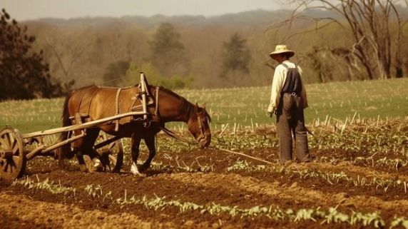
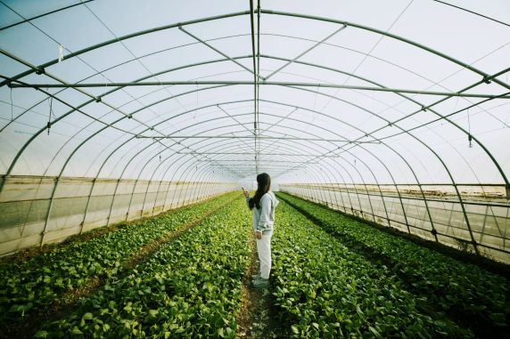
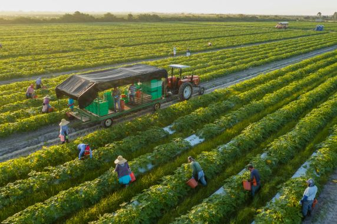
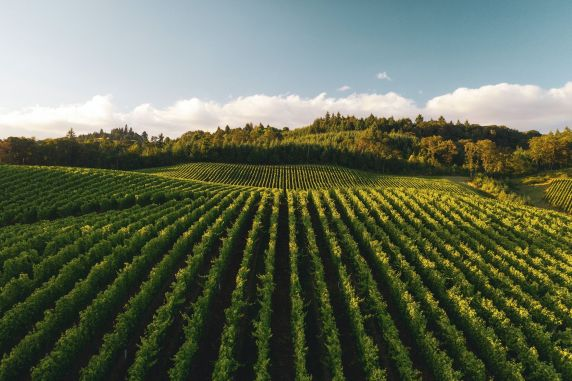

Understanding Different Farming Methods




Farming has been practiced for over 10,000 years, and traditional and small-scale farming methods still play an important role in feeding many communities around the world today.
North America, especially the Midwestern United States known as the “Corn Belt,” is one of the world’s leading regions for row crop farming. States like Iowa, Illinois, and Nebraska produce large amounts of corn and soybeans using large-scale mechanized farming equipment.